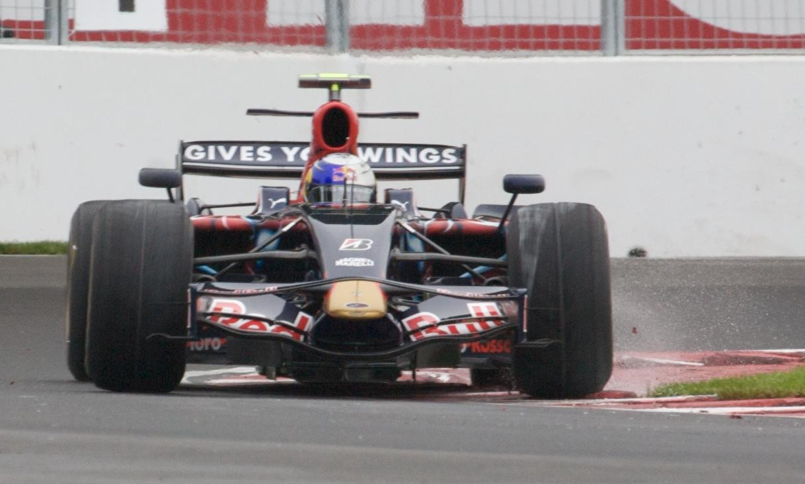
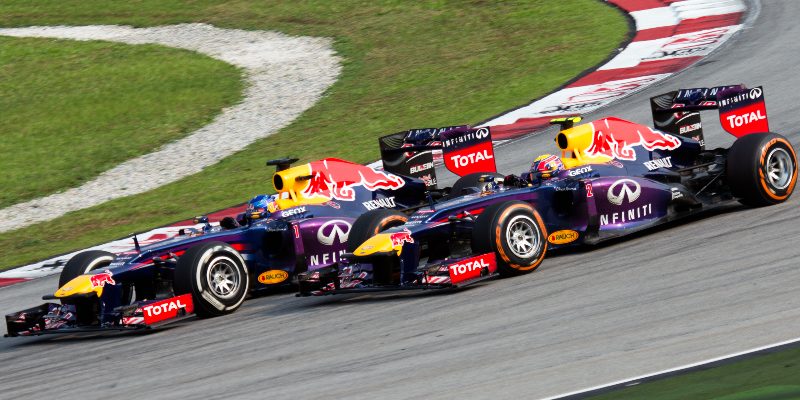

Toro Rosso (2007-2008)
Youngest polesitter and first race win
BMW released him in July 2007 to join Red Bull's Scuderia Toro Rosso, replacing Scott Speed from the 2007 Hungarian Grand Prix onwards, as Vettel was already under contract to Red Bull Racing. It was also announced that he would drive for Toro Rosso in 2008 alongside Sébastien Bourdais.
In the rain-affected Japanese Grand Prix at Fuji, Vettel worked his way up to third, behind Lewis Hamilton and Red Bull Racing's Mark Webber, and seemed to be on course for his and the team's maiden podium finish. However, Vettel crashed into Webber under safety car conditions, forcing both cars to retire. Webber said after the race: "It's kids isn't it. Kids with not enough experience - you do a good job and then they fuck it all up". Vettel was initially punished with a ten-place grid penalty for the following race, but this was lifted after a spectator video on YouTube showed the incident may have been caused by Hamilton's behaviour behind the safety car.
Vettel finished a career-best fourth a week later at the Chinese Grand Prix, having started 17th on the grid while in mixed conditions. He was tipped by Red Bull owner Dietrich Mateschitz as one of the sport's big future stars: "Vettel is one of the young guys with extraordinary potential He is fast, he is intelligent, and he is very interested in the technical side."
After four races of the 2008 season, Vettel was the only driver to have failed to finish a single race, having retired on the first lap in three of them. At the Monaco Grand Prix, Vettel scored his first points of the season with a fifth-place finish, after qualifying 17th. Toro Rosso's technical director Giorgio Ascanelli explained that something changed at the European Grand Prix in Valencia: "Suddenly Vettel understood something about how to drive an F1 car quickly. It made a huge difference - not only to the speed he could unlock but also to his ability to do so consistently.
At the wet Italian Grand Prix, Vettel became the youngest driver in history to win a Formula One Grand Prix, aged 21 years and 74 days. He led for the majority of the Grand Prix and crossed the finish line 12.5 seconds ahead of McLaren's Heikki Kovalainen. It would also be Toro Rosso's only win. Earlier in the weekend, he had already become the youngest pole-sitter. Toro Rosso team boss Gerhard Berger said: "As he proved today, he can win races, but he's going to win World Championships. He's a cool guy". His victory led the German media to dub him "Baby Schumi".
Vettel was named 2008 Rookie of the Year at the Autosport Awards.
Red Bull (2009–2014)
2009–2010: Championship runner-up and youngest world champion

At the start of the 2009 season, Vettel replaced the retired David Coulthard at Red Bull Racing. He began strongly at the Australian Grand Prix, running in second for the majority of the race. However, a clash with Robert Kubica over second place in the latter stages forced both to retire. He went on to take pole position and the race win at Chinese Grand Prix; Red Bull Racing's maiden pole and win.
Further wins followed in Great Britain, Japan and Abu Dhabi. He won the Japanese Grand Prix from pole position, leading every lap. Vettel won the inaugural Abu Dhabi Grand Prix, the first ever day-night race, to finish second in the World Drivers' Championship standings behind Jenson Button He also scored his third fastest lap of the year, drawing him level with teammate Mark Webber. However, as Vettel had more second fastest laps, he won the 2009 DHL Fastest Lap Award.
Vettel took the first pole position of the 2010 season at the Bahrain Grand Prix. He led most of the race but as a result of a spark plug failure, Vettel finished in fourth place. At the Australian Grand Prix, Vettel was appointed as a director of the Grand Prix Drivers' Association. He took his first win of the season in Malaysia.
In Monaco, Vettel made it a Red Bull 1-2 with him second and Webber first. Both were equal on points in the standings, with Webber first based on total wins. At the Turkish Grand Prix, Vettel was running second behind Webber when he made a passing move on his teammate. The two collided, putting Vettel out of the race, with neither driver accepting responsibility for the collision.
At the British Grand Prix, both Vettel and Webber's cars were fitted with a new front wing design. Vettel's wing was damaged in the third practice session, and Webber's sole surviving example was removed and given to his teammate. Vettel qualified in first place, but suffered a puncture. He finished seventh while Webber took the victory. In Japan, he qualified on pole ahead of Webber and went on to win with a lights-to-flag victory. Aged 23 years and 98 days, Vettel became the youngest Grand Prix driver to win at the same track on two occasions. At the inaugural Korean Grand Prix, Vettel led the first 45 laps before retiring with engine failure, handing victory to championship rival Fernando Alonso.
With the 1-2 finish at the Brazilian Grand Prix, Vettel and Webber secured Red Bull Racing's first World Constructors' Championship. Vettel went into the final race of the season in Abu Dhabi with a 15-point deficit to Alonso and a 7-point gap to Webber. He won the Grand Prix from pole to become the youngest World Drivers' Champion in the sport's history, as Alonso only finished in seventh place. Following John Surtees in the 1964 season and James Hunt in 1976, this was the third time in Formula One history that the title winner had not topped the championship table until after the last race.
2011–2012: Successful title defences, most poles in a season

Vettel started the 2011 season with wins in Australia and Malaysia, before a second-place finish at the Chinese Grand Prix due to poor tyre management, possibly related to his inability to properly communicate with his team, as his radio was broken. In Monaco, Vettel led the race but due to another radio malfunction, the Red Bull pit crew was not prepared when he came in. The pit stop was slow and he was sent out on the wrong tyres, handing the lead to Button. Vettel switched to a one-stop strategy and stuck with one set of soft tyres for 56 laps. He was caught by Alonso and Button as his tyres deteriorated, but neither were able to pass him. The race was red-flagged with few laps remaining, which allowed teams to change their tyres; when the race was restarted under the safety car, Vettel was able to retain the lead and win.
At the European Grand Prix, the Fédération Internationale de l'Automobile (FIA) enforced a ban on engine mappings. It was believed by some in the press that this was an attempt by the FIA to thwart Vettel's early domination. Nevertheless, he took pole with the fastest qualifying lap in Valencia Street Circuit's history. Vettel dominated with his first hat-trick of 2011, and won his sixth race out of eight. The FIA implemented another rule change at the British Grand Prix, targeting the blown diffusers. Red Bull believed the changes would cost them about half a second per lap. During the race, Vettel held off Webber for second place, who ignored a radio message from team principal Christian Horner to hold position. It was only the second time in the sport's history that a driver had finished second or higher in each of the first nine races of a season and won at least six of them.
Vettel's run of fourteen successive front-row starts and eleven successive top two finishes ended at his home race, where he qualified third and finished fourth. In Italy, he took his tenth pole position of the year, in which he joined Ayrton Senna as the only driver to have taken ten pole positions in two separate seasons. A podium finish in Japan secured his second successive title with four races remaining, making him the youngest ever double and back-to-back champion. Vettel won the following race in Korea to become the second driver to take at least ten wins in a season after Michael Schumacher. He also helped to secure Red Bull's second successive World Constructors' Championship. Vettel took his eleventh victory of the season in the inaugural Indian Grand Prix, leading every lap from pole position, as well as setting the race's fastest lap to claim his first grand slam. Vettel broke the record for the most pole positions in a season at the season finale in Brazil, after he clinched his 15th pole of the year. He completed the year with 15 poles, 11 victories, and 17 podiums from 19 races; Vettel also earned a record total of 392 points.
Vettel started the 2012 season with a second place at the Australian Grand Prix, before he finished outside the points in Malaysia following a collision with backmarker Narain Karthikeyan. Vettel and Horner criticised Karthikeyan's driving, with Vettel calling him an "idiot", and a "cucumber". Karthikeyan hit back, calling Vettel a "cry baby". Vettel crossed the line in first place at the Bahrain Grand Prix to go top of the championship standings. Three races without a podium place followed, before he retired at the European Grand Prix after an alternator failure, dropping him to fourth in the standings. In Germany, Vettel finished second behind Alonso but received a 20-second time penalty after the race, as he was off the track when he overtook Button; Vettel dropped back to fifth. He started in 10th place but finished second in Belgium to climb up to second place in the championship. Vettel then retired at the Italian Grand Prix due to an alternator failure, which saw the gap to leader Alonso grow to 39 points with seven races remaining. He won next race in Singapore, as he kept the lead until the 2-hour race limit was reached. At the Japanese Grand Prix he took his second career grand slam and coupled with Alonso's retirement, he cut the gap down to just four points. After winning at the Korean Grand Prix, the Indian Grand Prix brought another victory, as Vettel topped all three practice sessions before taking pole position and leading every lap of the race to win.
During qualifying at the Abu Dhabi Grand Prix, Vettel was told to stop the car due to a fuel pump issue; he was forced to start from the pit lane. From last place, Vettel fought his way back to finish in third place. He started the last race in Brazil with a 13-point cushion against Alonso. On the opening lap, Vettel spun after an incident with Bruno Senna. Following changing weather conditions, Vettel climbed up to finish in sixth place to win the championship by three points and to become the youngest ever triple world champion. He also became the third driver to acquire three consecutive championships, after Juan Manuel Fangio and Schumacher.
2013-2014: Quadruple world champion, nine wins in a row, and departure from Red Bull
Vettel started the first two races of the 2013 season on pole position, and at the Malaysian Grand Prix, he lapped over 2.5 seconds faster than teammate Webber in qualifying during a wet session. He won the race, though not without controversy. Vettel ignored the team orders and passed Webber for the lead. Webber was furious after the race and said that Vettel "will have protection as usual and that's the way it goes". Team principal Horner, although unhappy with Vettel's actions, pointed out that Webber had defied team orders on several previous occasions. He acknowledged that the already fragile relationship between the two drivers had further broken down as a result of the incident. Vettel claimed that he was not sorry for winning and that if the situation presented itself again, he would have passed Webber despite the order, adding that he felt Webber did not deserve to win the race.
Following wins in Bahrain and Canada, his championship lead was cut at the British Grand Prix as he was denied a likely win due to gearbox failure. Vettel bounced back to win his home race in Germany for the first time. After he finished third in Hungary, Vettel won the last nine races of the season, including grand slams in Singapore and Korea. Vettel set the record for most consecutive race wins with nine and he became only the third man after Alberto Ascari and Jim Clark to take consecutive grand slams. He sealed his fourth world title at the Indian Grand Prix.
On several occasions during the season, spectators booed Vettel. Although the booing was widely condemned by fellow drivers, the media and others in the paddock, Vettel revealed that it had a negative impact on him.
For the 2014 season and beyond, drivers picked a unique car number to use for the remainder of their Formula One career; Vettel chose the number five. However, as reigning World Drivers' Champion, he carried number one throughout the season.. Webber left the sport and was replaced by Daniel Ricciardo, who was promoted from Toro Rosso.
Vettel struggled with reliability issues throughout winter testing, and forced him to retire at the opening Australian Grand Prix. Reliability problems also forced Vettel to retire at the Monaco and Austrian Grands Prix. Vettel qualified on the front-row for the races in Malaysia, Great Britain and Hungary, and finished on the podium in Malaysia, Canada, Singapore and Japan. After the Russian Grand Prix, he had been outqualified by a teammate over a season for the first time in his Formula One career. In addition to suffering reliability problems, throughout 2014 Vettel struggled to get to grips with the Red Bull RB10, and the Pirelli tyres. He signed off the year by becoming the first defending champion to fail to win a race during a season since Jacques Villeneuve in 1998.
In October, Red Bull had announced that Vettel would be leaving the team at the end of the season to join Scuderia Ferrari, one year before his contract was due to expire. Vettel replaced Alonso and partnered his friend Kimi Räikkönen. Vettel mentioned he would like to drive for Ferrari at some point in his career and was already rumoured in 2012 to have a non-binding pre-contract, with options, to join them in 2014. He was denied an early release from his Red Bull contract to test the 2014 Ferrari car in Abu Dhabi. In spite of this, Vettel was present at the Ferrari test - although not driving the car - but Red Bull did not enforce any sanctions. Vettel instead made his first appearance in November, completing nearly 100 laps in the 2012 car around the test track of Fiorano.